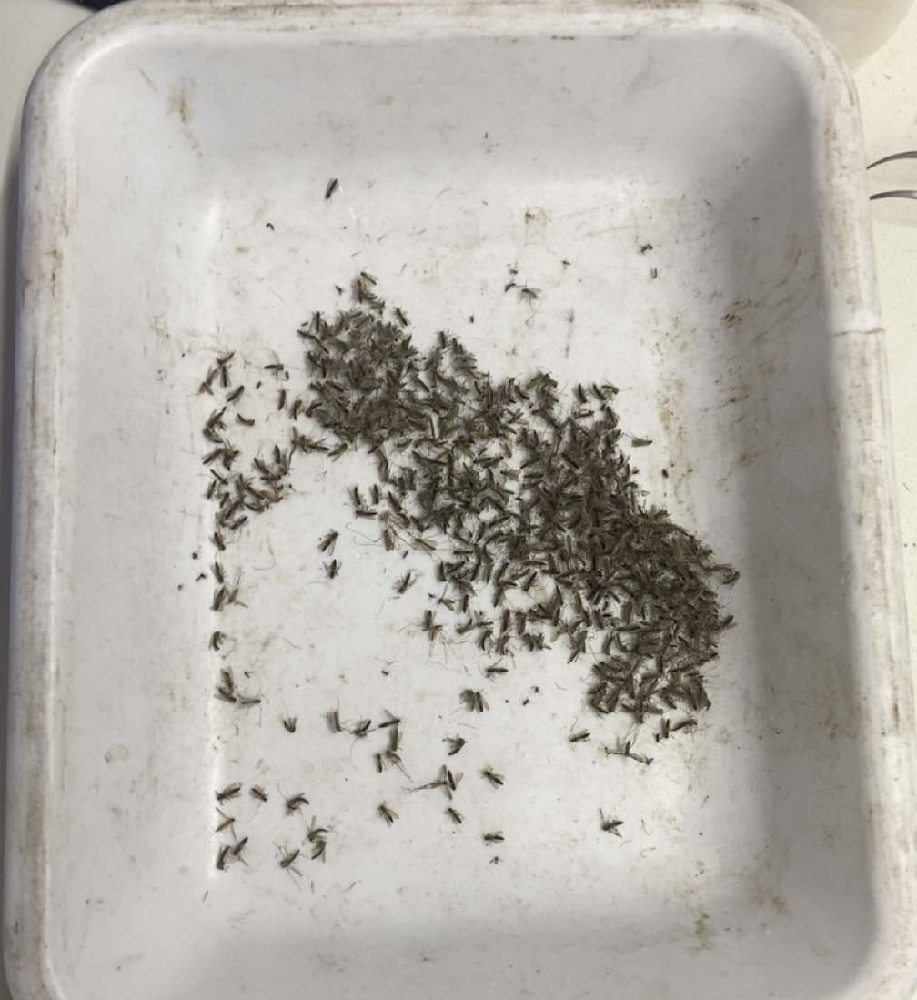
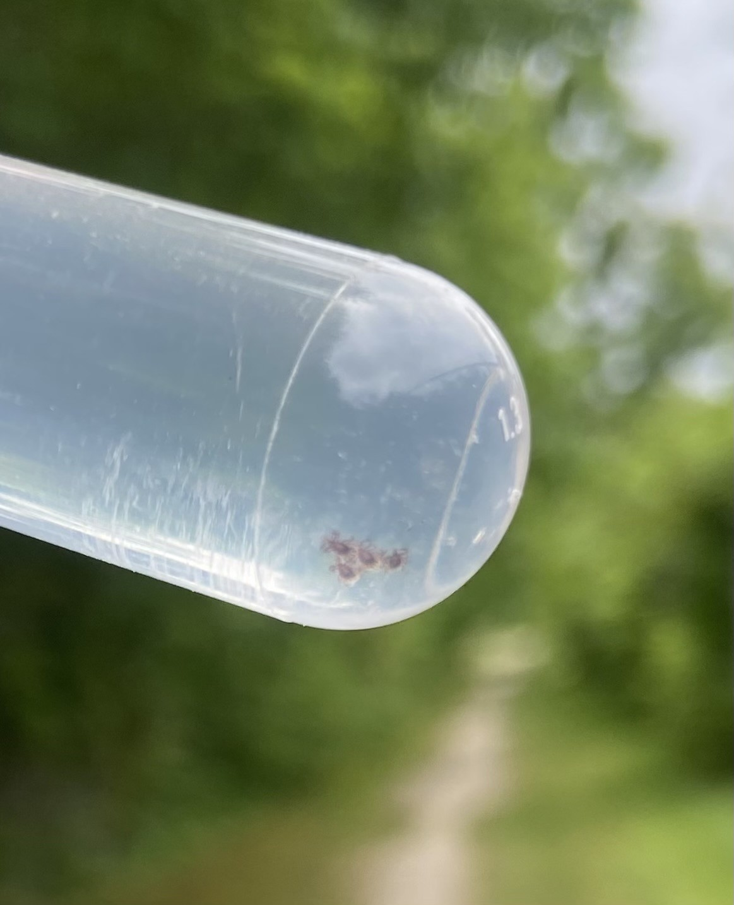
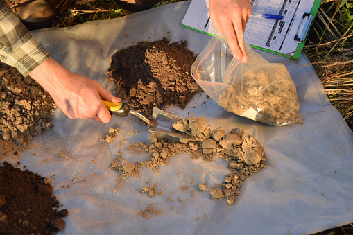
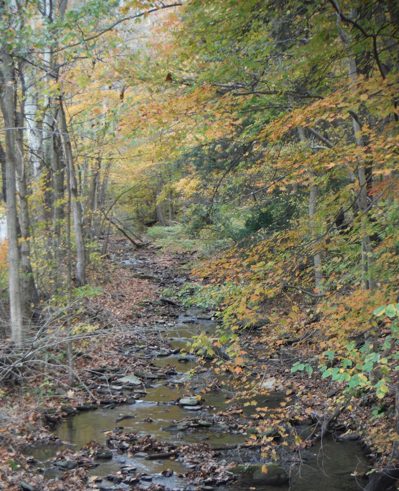

During my time with the Greene County Conservation District, I worked on several field-based programs that focused on public health, agriculture, and stream conservation. My responsibilities varied throughout the week depending on program needs, but all of them connected back to environmental monitoring and land stewardship across the county.
My Internship Experience

West Nile Virus (WNV) Program
I was essentially running the West Nile Virus program, driving the county truck to predetermined mosquito trapping locations within Greene County. I would set the trap one day and return the next day to collect the mosquitoes.
When collecting, I used dry ice to knock the mosquitoes out so they could be placed into vials. These samples were then shipped to a lab in Harrisburg, PA to be tested for vector-borne diseases such as West Nile Virus, which in rare cases can lead to inflammation of the brain or spinal cord.

Tick Drags and Collection
Once every two weeks, I performed tick drags. I would walk through grassy or leaf-littered areas with a square cloth attached to a rod and rope, dragging it to collect ticks.
After a set distance, I would check the cloth for ticks and collect them using forceps. They were placed into vials with ethanol and sent to a lab for testing for Lyme disease, which can cause illness in humans, along with other vector-borne diseases.

Farm Visits and Soil Sampling
Occasionally, when West Nile Virus duties were finished for the week, I assisted staff on farm visits to check in with landowners enrolled in district programs. These visits included looking at new improvements like cattle water troughs and stream crossings.
We also collected soil samples across cropland to determine nutrient levels. These samples were sent to Penn State University and used to help farmers make decisions about practices like lime application or manure management to improve soil health and yield.

Stream Restoration Visits
When West Nile Virus duties were complete for the week, I also assisted staff on stream restoration visits with landowners to discuss conditions of streams on their property.
These visits focused on restoration options such as stone placement or planting vegetation to reduce erosion and improve streambank stability.